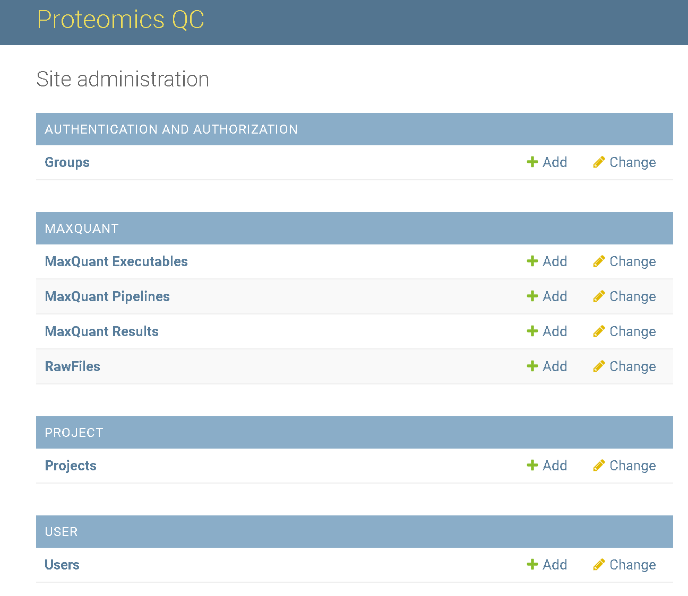
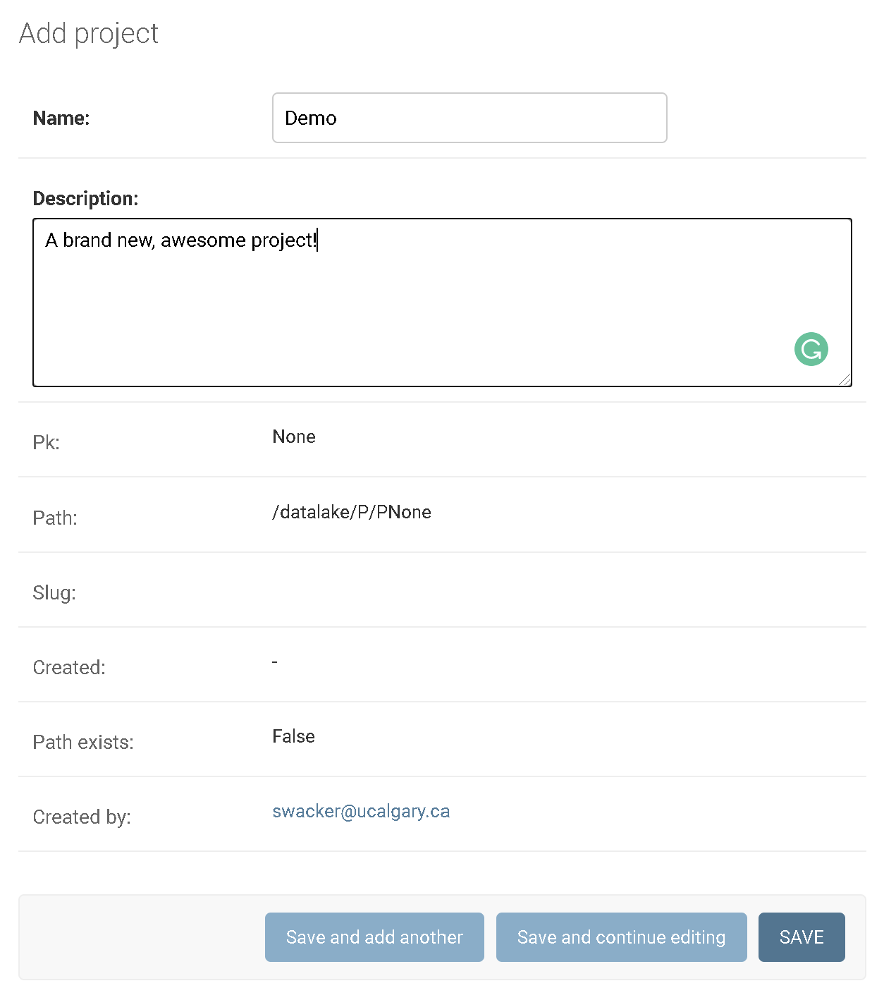
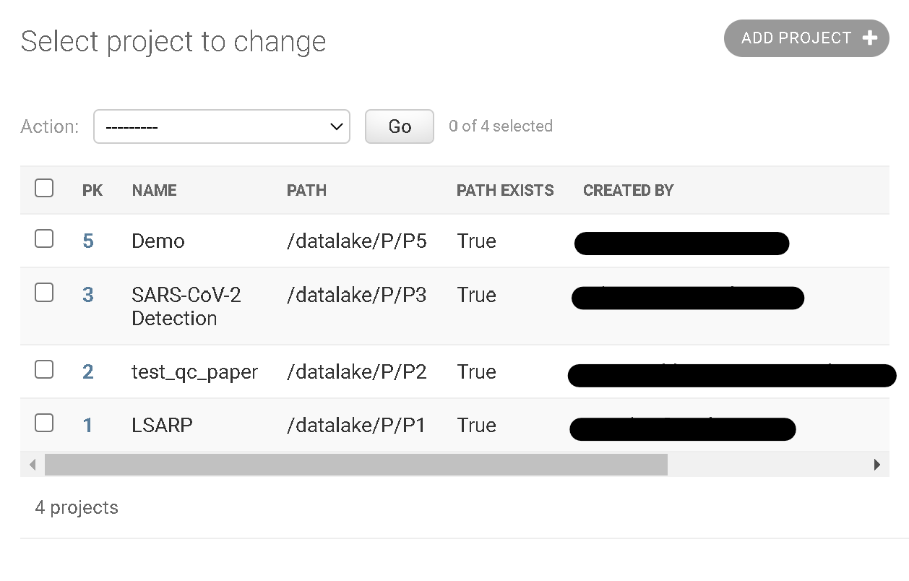

How to add a new project?
A project is a logical container for pipelines. Each project can contain multiple pipelines and all files submitted to certain or added within a certain project will be stored in a dedicated project directory in the datalake.
To set up a new pipeline the user has to login to the admin panel.

Click on the add sign behind Project to get to the project creation form:

Here, fill up the editable fields (name and a description) and click on SAVE.
You will be redirected to the Projects Overview and the new project appears on the top of the list:

Congratulations you added a new project.